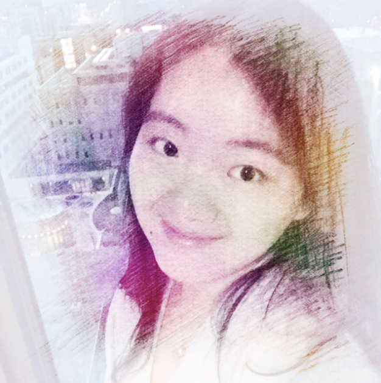

News
• [Sep, 2017] Our paper "Hardness Prediction for Object Detection Inspired by Human Vision" is selected as an oral presentation of International Conference of Image Graphics 2017. Check out the pictures!
• [July, 2017] Our paper "Hardness Prediction for Object Detection Inspired by Human Vision" has been accepted to International Conference of Image Graphics 2017.
• [June, 2017] I am going to GRASP laboratory, University of Pennsylvania for research internship this summer.
• [June, 2017] I will take charge of "External Communication department of Student Union of Tsinghua University" as an Assistant Chairman. Here is a photo.
• [Jan, 2017] Our paper "Dataset framework for Object Detection Based On Human Visual Features" has been accepted by Journal of Graphics.
• [Dec, 2016] Check this out!!! We have successfully built up a website for EE Anniversary broadcast for the first time!!! Here is a photo of our team.
{kind=link}
{kind=link}
{kind=link}
About me

Tsinghua Student My name is Yuwei (Victoria) Qiu. I am now a senior undergraduate of the Department of Electronic Engineering, Tsinghua University.
CS Researcher While taking the courses, I am also a research assistant at 3-D Image Simulation Lab, Intellectual Graph and Text Processing Lab, Tsinghua University, advised by Prof. Huimin Ma and Prof. Shengjin Wang, and GRASP Laboratory, University of Pennsylvania, advised by Prof. Jianbo Shi.
Research Interest Computer Vision/Graphics, Robitics, Mechine Learning
Future Now I am looking for graduate opportunities in the United States.
Hobbies I am proficient in Piano and have a special interest in its classic pieces, /*Nutcracker is my favorates :)*/. As for sports, I love tennis and hiking, especially. Recently, I would like to say I am a talented amateur of photography, lollllllll!
Education
Department of Computer and Information Science, University of Pensylvania
June 2017 - Sep. 2017
Visitng Researcher
Department of Electronic Engineering, Tsinghua University
Aug. 2014 - June 2018(expected)
Bachelor of Engineering
Work Experience
Huawei Research, Beijing, Computer Vision Group
Oct. 2017 - Present
Visual Computing Researcher
Publication
-
Yuwei Qiu; Huimin Ma; Lei Gao;International Conference on Image and Graphic 2017, Accepted,
oral presentation(~18%)-
A Human Visual Bionic Framework for Object RecognitionLei Gao; Huimin Ma; Chenhao Liu; Yuwei Qiu;Journal of Image and Graphic, Accepted,
Research


-
Characterizing Psychological Problems via Interactive Devices
3D Image Simulation Laboratory, Tsinghua University
Research Assistant to Prof. Huimin Ma


-
Magnetic Resonance Imaging (MRI) Registration
Electrical Engineerign, Stanford University
Participants in a remote project of Prof. Tsachy Weissman


Project
-
3-D vector text construction and texture mapping
Course project in “Computer Graphics”
-
Image Searching
Internship project at Chinese Academic Institute


Selected Awards/Honors/Positions
Academic
Invited talk to International Conference on Image and Graphic
2017
Oral presentation for the first-author paper Hardness Prediction for Object Detection Inspired by Human Vision.
Outstanding International Research Assistant Award, Stanford EE
2015
Awarded for great performance in research on Medical Image Registraion.
Scholarship
Hong Qian Comprehensive Scholarship
2017
Awarded to students with overall development in school performance, academic achievements, art skills, social communication and sports.
Tsinghua Annual Undergraduate Scholarship for Outstanding Academic Achievement
2016-2017
Awarded to students with exceptional academic achievements including winning international competitions and paper publishment.
Tsinghua Annual Undergraduate Scholarship for Outstanding Social Skill
2015-2017
Awarded to students served as chief captain or chairman of large association.
Tsinghua Annual Undergraduate Scholarship for Outstanding Art Performance
2015-2017
Awarded to students talented at instruments, photography, dancing or other art skills.
International Competition
First prize and Outstanding Team Captain Award, Global Business Leaderiship Competition
2015
Held at Intel, Silicon Valley.
Awarded for the most outstanding business design and corporation operation.
Student Activity
Chairman, EE Student Union, Tsinghua University
2016 - present
In charge of External Communication.
Raised nearly USD 20,000 for financial sponsorship with in one year.
Team Captain for Development for Live Broadcasting of 2017 Anniversary Celebration
2016 - present
Built up a website for live broadcasting with millions of audience.
Successfully live broadcasting for 5 hours with over 5000 clicks.
Yuwei Qiu, 2017
-